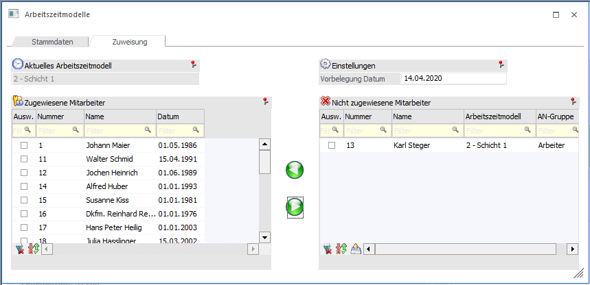
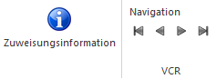

Im Register Zuweisung erfolgt die Zuordnung des Arbeitszeitmodells für Arbeitnehmer bzw. Mitarbeiter.

Ø Aktuelles Arbeitszeitmodell
In diesem Feld wird das aktuell ausgewählte Arbeitszeitmodell angezeigt.
Ø Vorbelegung Datum
Eintragung eines Datums ab wann das Arbeitszeitmodell gültig ist.
Buttons

Ø Zuweisungsinformation
Über den Button "Zuweisungsinformation" wird am Bildschirm eine Liste mit jenen Arbeitnehmern bzw. Mitarbeiter angezeigt, welche noch kein Arbeitszeitmodell zugordnet haben.
Ø Navigation
Über die sogenannte VCR-Buttonleiste kann durch Mausklick zwischen den Arbeitszeitmodellen geblättert werden. Damit auf diese Weise auch Daten kontrolliert und geändert werden können, kann mit der Tastenkombination SHIFT + F5 eine Zwischenspeicherung der Daten (Daten werden gespeichert, der Inhalt in den Masken bleibt bestehen, und auch der Focus bleibt im letzten veränderten Feld stehen) durchgeführt werden.
ü  Damit kann
der erste Datensatz angesprochen werden (Tastatur STRG SHIFT POS1).
Damit kann
der erste Datensatz angesprochen werden (Tastatur STRG SHIFT POS1).
ü  Damit kann
der vorherige Datensatz angesprochen werden (Tastatur SHIFT -).
Damit kann
der vorherige Datensatz angesprochen werden (Tastatur SHIFT -).
ü  Damit kann
der nächste Datensatz angesprochen werden (Tastatur SHIFT +).
Damit kann
der nächste Datensatz angesprochen werden (Tastatur SHIFT +).
ü  Damit kann
der letzte Datensatz angesprochen werden (Tastatur STRG SHIFT ENDE).
Damit kann
der letzte Datensatz angesprochen werden (Tastatur STRG SHIFT ENDE).
Zugewiesene Mitarbeiter
In diesem Bereich werden jene Arbeitnehmer bzw. Mitarbeiter angezeigt, welche das ausgewählte Arbeitszeitmodell hinterlegt haben.
Nicht zugewiesene Mitarbeiter
In diesem Bereich werden jene Arbeitnehmer bzw. Mitarbeiter angezeigt, welche das ausgewählte Arbeitszeitmodell nicht hinterlegt haben.
Mit den Buttons können die Arbeitnehmer bzw. Mitarbeiter zum Arbeitszeitmodell hinzugefügt oder entfernt werden.